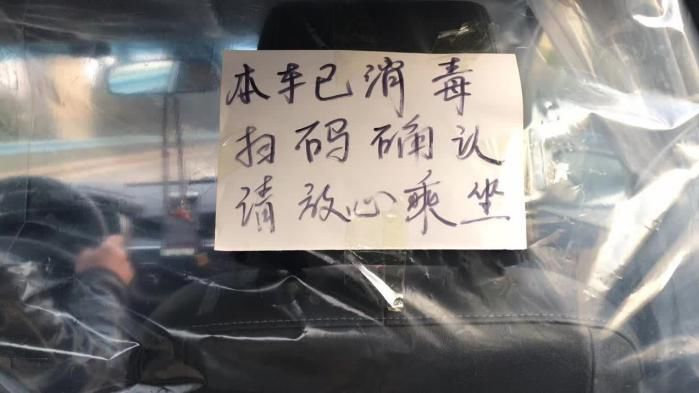
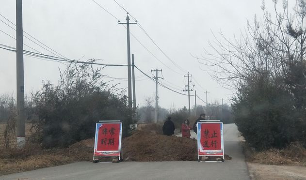
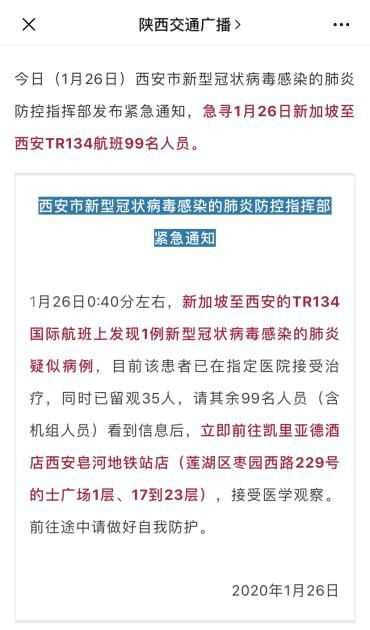
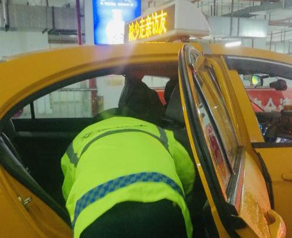
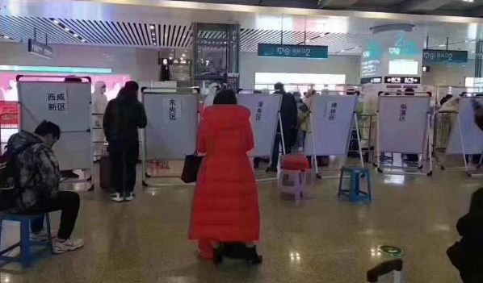
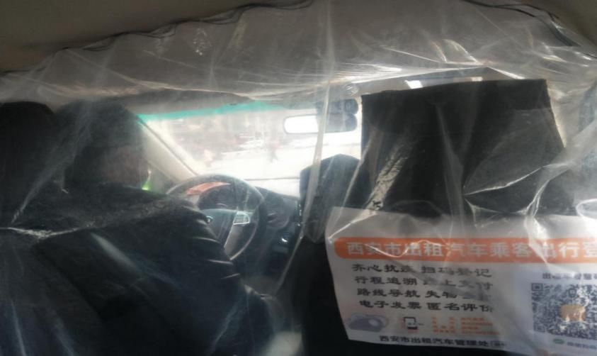
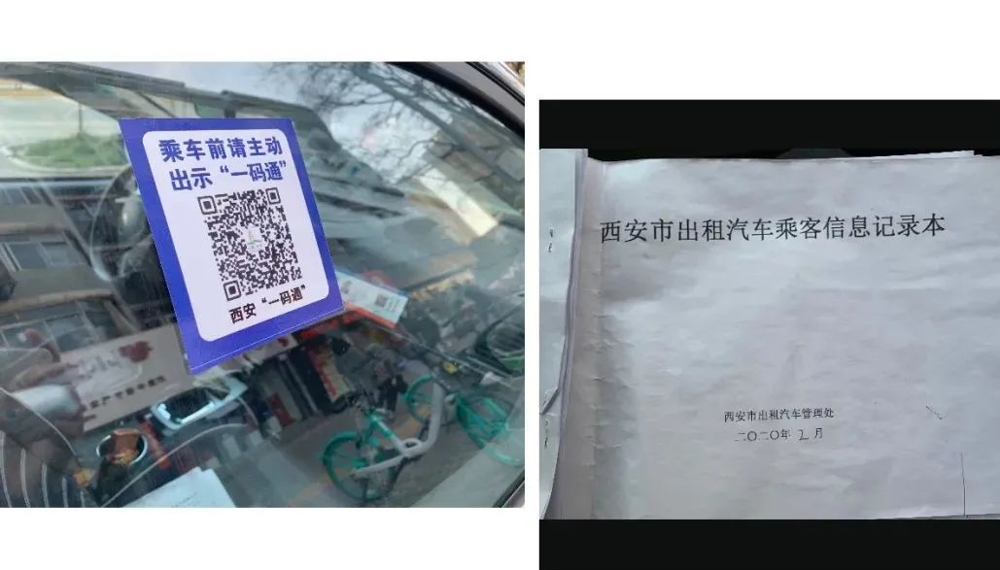

机场等7个小时才拉到客！出租车司机呼吁减免份子钱
原文链接 备份链接 01.02.2020本文字数：2017，阅读时长大约4分钟 导读：乘客减少、营运收入明显降低，“份子钱”成了出租车司机的痛。 作者 | 第一财经 童兰 邱智丽 魏明明 往年春节正月初六过后，众多城市迎来返程高峰。但受 …
“刘司，三十还拉人?”
“si”在陕西通“师”，即师傅的意思。
“拉！没人咧再回。”刘司冲搭话的车队同事一扬下巴，飞快钻进了驾驶座。

图 | 疫情期间出租车防护措施
除夕
2020年1月24日，除夕当晚。
刘司把出租车停在离家两条街道的长安路上，在永辉超市门口等他的小儿子。其实家里年货已备齐，但娃不知道咋非要买点零嘴。“一年到头也就这会得空。”他从车窗探头看暗蓝的天幕飘下星星点点的雪霜，微微眯起眼：“餐饮啊交通旅游都要靠过年这段时间盈利，更不用说我们开出租车的。”
刘司经营出租已有十六之久，04年进入西旅公司，当时还没有滴滴等一众打车软件的竞争，满西安还跑着烧天然气的纯绿色比亚迪，城中心到机场来回就算一百多大单。开了多年出租的他倒没有”老司机”的概念，车越开越熟稔，也越开越小心。
不一会儿，小儿子颠儿颠地抱着大桶可乐和众零碎跑过来，刘司一乐，在娃小脑瓜上揉了一把。
初一
庚子年初一，刘司准备把儿子送回西郊奶奶家过年，路上刷了一下手机，这个疑似来源武汉的新型冠状病毒来势汹汹，已经掀起了不小波澜。
西周秦汉选下的宝地兴许真能庇护子孙一时，但想以渭水波涛连绵秦岭阻断疫情就过于梦幻了。
1月25日，陕西新增7例确诊病例，累计已22例。乡县人口流动性不强，信息交流未必顺畅，但反应起来是非常迅速的。下午村镇里已经封村堵路，挂起了红色条幅、垒起小山似的土堆。刘司来时路已成“劝返点”，被带着口罩贴袖标的村干部火速攻占，当天下午七点一过，回来的人不许出去，出去了最好别回。
 图 | 村口劝返点
届时各地风格迥异的村长讲话还没在微博里火起来，还也没有“你出门，是不就显你?”的硬核劝返。如此严防死守使得刘司多少有点意外，为避免给家中老人添麻烦，他最终决定把儿子带回雁塔家里，不要外出了。
回城路上小朋友探头探脑看车窗外一闪而过口罩掩面的大人们，尚未意识到，从美食鞭炮逃作业的角度来说：庚子年还没开始过，就已经结束了。

1月27号，车队群里发了通知，刘司草草扫了一眼，心里一沉。
“我当晚正好在机场跑了几趟，载的乘客应该是没有新加坡航班。但疫情不明朗，咱的工作肯定是要外出，要考虑到家中大人小孩的健康……另外，贷款信用卡也不会因为病毒停缴。”
刘司略一思忖，就做了决定。给妻子简单交代了前因，并叮嘱“以后会尽量少回家、不回家。”便开始了“忙碌”的春节档。
图 | 无人驻足的钟楼
“往年从1月1号元旦开始到正月十五都是人流高峰期，西安机场、高铁、火车站来往的乘客每天排队等车，咱兵马俑、大唐芙蓉园、城墙钟楼过年期间接待游客近十万人，尤其兵马俑线路上不到一小时的路程能走三个小时。”
“结果今年都是急事才出门坐车，晚上有个乘客在东门上车，连声说‘太可怕太可怕了’。我问咋了，他说‘这街上一个人都没有’。嗨，你说这——”刘司想不出形容，只能摇了摇头。

图 | 车内消毒
爆发
和预想当中一样，自武汉封城之日起，各大城市都拉响了警钟。机场高速路上挤成了一片，乘客司机都要一一登记测量体温。
“那段时间西安的政策是一天一变，一开始说‘鄂’牌照的不许进，然后说陕西境外的车不许进出，最后严峻到只要不是‘陕A’车牌都不许进，有咸阳的小伙坐车往西安，就被拦下来了。”
这才出现了朋友圈里许多人高速上拍照等待的鲜见场面。

图 | 疫情期间西安北站
“外地回来的乘客应该是最早一批带上口罩，当时咱们这边还没这个意识。好多一家子回西安的没有防护服，买的一次性雨衣口罩全副武装。有个从新加坡回来的小姑娘还给过我N95，说‘我那能买到您快留上一个’，后来这事还发生了好几次。”刘司补充，“你想，资源最紧缺的时候人家给你口罩，真是比什么钱财都珍贵。”

紧接着，网约车全部停运，约车平台也相应关闭。出租车四个监控、行车记录仪全天开着，相对好管控、有保障。
“我身边也有‘爱心车箱’‘雷锋车队’的师傅，和我们载普通乘客不一样。他们被分派到各个医院门口，定点接送医护人员，从来没间断。像咱省医院、西京医院、唐都医院门口都是排长队；广电中心出示记者证也会免费接送，配合人家采访任务。”
刘司对03年SASI肆虐时的应对记忆已经不甚清晰，那时候他做个体生意，也是白口罩防护服和浓烈难止息的消毒水味没错，但远没有到歇业停摆的地步。
即便如此严防严控，依然有让人不住揪心的意外。“前两天就有司机拉乘客去唐都医院，然后才知道人发着烧。乘客一下去，司机就慌了。”刘司翻阅群里的消息，依然稍显担忧。

疫情最严重的时候，车队派发的是“五个一”：一个口罩，一个喷壶、一支笔、一个消毒本、一个登记本。出租车里都有塑料布隔成的“防护舱”，司机们也把它笑称“安全舱”，虽然简陋，但聊胜于无。乘客扫码登记后才能在后座上车，当被问到是否有人不愿意配合后面乘坐时，刘司摆手“那没有，有乘客登记都拿自己的笔，谨慎的还会拿纸垫着。”

扫码、登记、乘车、消毒再扫码……如此一套循环的搭配组合司机师傅们已经渐熟练操作了。刘司介绍说：“你看，把车上二维码一扫，如果是黄色，那就是去过疫区还没过隔离期，一般就没有人拉你；红色——那就登记信息先把人稳住、立马报警！”
非常时期非常对策，比起疫情期间所需防护工具紧缺或操作过程繁冗，司机们的三餐是更无从解决的问题。勤快的河南人早晨不再出摊，夜晚出租车师傅聚集的明德门小炒、串儿店也不再人声鼎沸。
在这疫情突袭的危城中，24小时便利店里的饼干、方便面才是能赖以果腹的食物。“太想吃一碗热腾腾的面了！”这是包括刘司在内大多出租车师傅的最大愿望。
尾声
“命运在世事中显现，因此它将在人们心中出现。”荣格曾在书里写道。
很快，运管处发了通知，车队二月近五千元的管理费免交。三月暂免半月，其他情况再做通知。刘司松了口气，“二月初这段时间，出租车司机不开的、拿车运菜的都不是新鲜事，和城管斗智斗勇也有。”
“我到今天印象很深的是西安最冷的那段时间有点飘雪花，高速上的交警穿着防护服一站就得一晚上。曲江大队有个交警，还是副大队长。也不知道是没注意还是测了没问题，执勤时放进去了个疑似疫区的车，直接被免职。”
刘司最后说，“从疫情爆发，直到半个月后我才敢回家，更多看不见的一线人员还没有放松嘞。”
老大爷深夜路边手风琴奏响喀秋莎、被司机举起体温器吓趔趄的乘客、追在救护车后哀哀呼唤的女儿、“我亲人已故，空出一张床位”、言语为棍棒打断央视直播的红十、“108亿、18亿、108万”的矫正、丢下现金跑掉的环卫工、歇业踌躇的小店老板……
如果此刻时间定格，空间拉远，无须复杂蒙太奇着墨就已成一幕幕荒诞现实主义大作。我们不歌颂伟大，不崇尚牺牲，更不愿洪流中浪花只激荡一刻。
而时代轰鸣抖落下的尘埃，重重砸在每个人的头顶，留下时间跃迁过的颗粒残影。数万分子在同一微秒交叠重组，倏尔尽成远行客。
二月中旬，刘司在自家客厅角落置了张小床开始自行隔离，结束长达半个月的“三过家门而不入”。等疫情完全过去，一定把小崽子喝起来就不撒嘴的可乐屯上几箱，再在用泛青色胡茬的下巴蹭蹭他可爱脸颊。进入黑甜梦乡前，刘司这么想着。
图源网络
里尔克诗说“如果春天要来，大地就使它一点点地完成”。
新十年开篇，我们或将鼻青脸肿，或试探狐疑地走出家门，哪怕加缪所说“威胁欢乐的东西”始终存在，也需在他处中活出新的快慰。
原文链接 备份链接 01.02.2020本文字数：2017，阅读时长大约4分钟 导读：乘客减少、营运收入明显降低，“份子钱”成了出租车司机的痛。 作者 | 第一财经 童兰 邱智丽 魏明明 往年春节正月初六过后，众多城市迎来返程高峰。但受 …
原文链接 备份链接 作者近照 这是纽约的一个朋友写的情况，其实随着疫情的蔓延，美国许多医院都出现了口罩等医护用品的短缺。好友梅玫在硅谷帮忙收集民众捐赠的口罩送到医院，我在的南加州也有TOC在组织捐款捐口罩给当地医院。前一阵大学同学给我们北 …
原文链接 备份链接 中国用一种决绝的态度去处理疫情的防控，效果不错，而美国刚刚开始不久，最后效果怎样，有待观察。 口述 | James Zhou 整理 | 刘朝晖 上个周末，晴空万里。我在家里包了点馄饨，从新泽西的家中开车赶往30英里外 …
原文链接 备份链接 一个半月前，国内的亲属和新冠疫情的发展是他们担心的事情；一个半月后，他们开始担心起了身边人和自己。 配图 | Sipa图片社 陈愿看到学校官网上挂出本科和硕士的停课通知，是在当地时间2月22日晚——那一天，意大利伦巴第 …
原文链接 备份链接 作者近照 欢迎收看二湘空间的世界疫情系列，六维，九维都会发，11维继续发方方日记，今天的《狂流》连载发在六维的二条。 菊子：美国东北部疫情日记（1） 饶蕾：纽约疫情日记（1） 大梨：德国疫情 美国疫情实录：西雅图·旧金 …